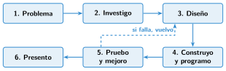

Las fases de un proyecto de robótica
🤔 Pienso5 min
Qué hago aquí: Piensa un momento y contesta con lo que ya sabes. No pasa nada si no lo sabes: es para empezar.
Numera del 1 al 4 los pasos para hacer una tarta.
📖 Leo y aprendo15 min
Qué hago aquí: Lee despacio, mira los dibujos y los ejemplos, y quédate con la idea clave del final.
Para construir un robot no basta con probar piezas hasta que funcione. Hay que seguir un orden. Ese orden es un proyecto.

Todo se apunta en el cuaderno de proyecto: dibujos, ideas y pruebas.
✏️ Hago25 min
Qué hago aquí: Haz las actividades en orden. Empieza siempre por las básicas.
Escribe las seis fases de un proyecto en orden.
¿En qué fase se hace cada cosa? Une con flechas.
| Dibujar el robot • | • Presento |
| Arreglar un fallo • | • Diseño |
| Grabar un vídeo del robot • | • Pruebo y mejoro |
¿Qué se apunta en el cuaderno de proyecto? Escribe dos cosas.
Escribe el problema de un robot que riega las plantas del huerto del colegio. ¿Qué tiene que hacer?
¿Por qué en la fase «Pruebo y mejoro» se vuelve atrás tantas veces? ¿Es un fracaso?
✏️ Puedes responder escribiendo, con un dibujo o un esquema, o contándolo en voz alta.
🚀 Amplío (si quieres saber más)
Qué hago aquí: ¿Has terminado? Lee la curiosidad o elige el reto. Es voluntario.
Haz el diseño del robot que riega: un dibujo con sus piezas y un diagrama de flujo sencillo.
✅ Compruebo5 min
Qué hago aquí: Contesta sin mirar la ficha y marca cómo lo llevas.